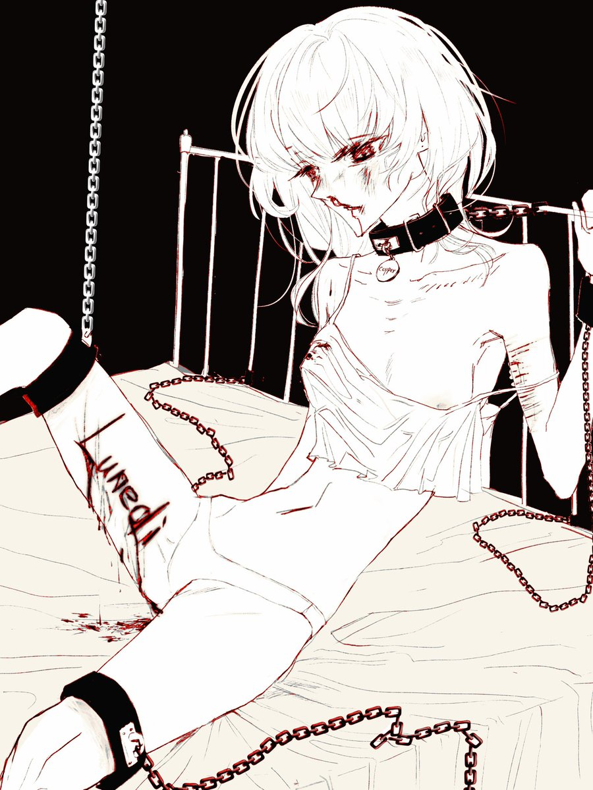

Cu
@copper1234000
总之…！多亏了nxy咪的推荐…！让mon当kp&kpc人生第一次跑了团？🙀
这个模组真的特别特别对我胃口…🥹总之就是各种各样的囚禁/暴力/性虐待爽的我一直流口水…开团即爽被揍一拳…
然后有一个情节是在大腿上刻他的名字…结果Mon兴奋的不行都打算爆写了结果我没roll够点数遗憾错过…
于是画了一下这个情节…🤤
还有就是mon再给我捏人物卡的时候…hp只有8，但SAN有80……
在你眼里原来我是一只坚毅的草履虫形象吗( Ꙭ)……
太好玩了…第二个模组也提上日程了…🤤
